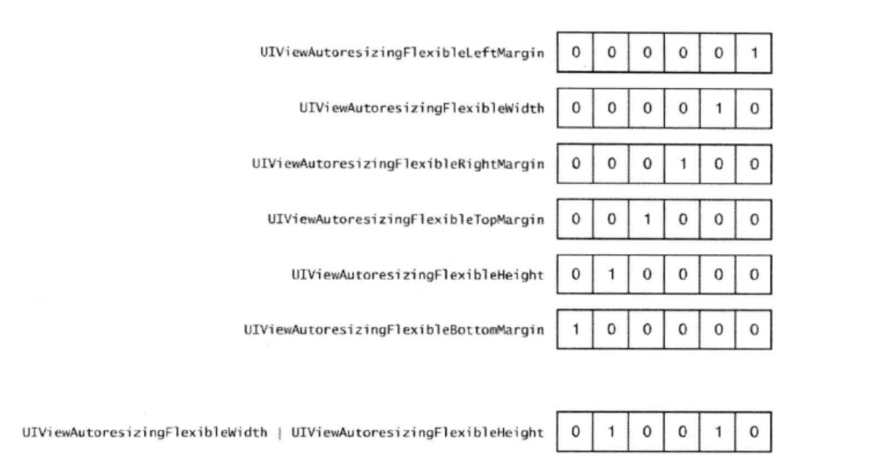

枚举只是一种常量命名的方式。某个对象所经历的各种状态就可以定义为一个简单的枚举集。比如说，用枚举表示socket connection的状态：
enum EOCConnectionState{
EOCConnectionStateDisconnected，
EOCConnectionStateConnecting，
EOCConnectionStateConnected，
}
这样便于理解，其中编译器会自动为每一个枚举分配一个独有的编号，从0开始，实现枚举所用的数据类型取决于编译器，不过其二进制位（bit)的个数必须能完全表示下枚举编号才行。在前例中，由于最大编号是2,所以使用1个字节的char类型即可。
然而定义枚举变量的方式却不太简洁，要依如下语法编写：
enum EOCConnectionState state = EOCConnectionStateDisconnected;
若是每次不用敲入enum而只需写EOCConnectionState就好了。要想这样做，则需使用typedef关键字重新定义枚举类型：
enum EOCConnectionState {
EOCConnectionStateDisconnected,
EOCConnectionStateConnecting,
EOCConnectionStateConnected,
)；
typedef enum EOCConnectionState EOCConnectionState;
现在可以用简写的EOCConnectionState来代替完整的enum EOCConnectionState 了：
EOCConnectionState state = EOCConnectionStateDisconnected;
在C++之后可以指定用何种“底层数据类型”来保存枚举类型的变量。这样做的好处是可以向前声明枚举变量了。若不指定底层数据类型，则无法向前声明枚举类型，因为编译器不清楚底层数据类型的大小,所以在用到此枚举类型时，也就不知道究竞该给变量分配多少空间。
指定底层数据类型所用的语法是：
enum EOCConnectionStateConnectionState : NSInteger { /*...*/ };
还可以不使用编译器所分配的序号，而是手工指定某个枚举成员所对应的值。语法如下：
enum EOCConnectionStateConnectionState {
EOCConnectionStateDisconnected = 1,
EOCConnectionStateConnectingf
EOCConnectionStateConnected
}；
上述代码把EOCConnectionStateDisconnected的值设为1,而不使用编译器所分配的0，如前所述，接下来几个枚举的值都会在上一个的基础上递增1。比如说，EOCConnectionState-Connected的值就是3。
还有一种情况应该使用枚举类型，那就是定义选项的时候。若这些选项可以彼此组合，则更应如此。只要枚举定义得对，各选项之间就可通过“按位或操作符”（bitwise OR operator)来组合。例如，iOSUI框架中有如下枚举类型，用来表示某个视图应该如何在水平或垂直方向上调整大小：
enum UIViewAutoresizing {
UIViewAutoresizingNone =0，
UIViewAutoresizingFlexibleLeftMargin =1<<0,
UIViewAutoresizingFlexibleWidth =1<<1,
UIViewAutoresizingFlexibleRightMargin =1<<2,
□IViewAutoresizingFlexibleTopMargin =1<<3,
UIViewAutoresizingFlexibleHeight =1<<4,
UIViewAutoresizingFlexibleBottomMargin =1<<5,
}
每个选项均可以启用或者禁用，，使用上述方式来定义枚举值即可保证这一点，因为在每个枚举值所对应的二进制表示中，只有1个二进制位的值是1。用“按位或操作符”可组合多个选项，例如：
UIViewAutoResizingFlexibleWidth|UIViewAutoresizingFlexibleHeight
下图列出了每个枚举成员的二进制值，并演示了刚才那两个枚举组合之后的值。用“按位或操作符”(bitwise OR operator)即可判断出是否已启用某个选项：
enum UIViewAutoresizing resizing =
UIViewAutoresizingFlexiblGWidth | UIViewAutoresizingFlexibleHeight;
if (resizing & UIViewAutoresizingFlexibleWidth) {
// UIViewAutoresizingFlexibleWidth is set
}

上图中每个枚举值的二进制表示，以及对其中两个枚举值执行按位或操作之后的二进制值。
在Foundation框架中也定义了一些辅助的宏，用这些宏来定义枚举类型时，也可以指定用于保存枚举值的底层数据类型。这些宏具备向后兼容（backward compatibility)能力，如果目标平台的编译器支持新标准，那就使用新式语法，否则改用旧式语法。这些宏是用#define预处理指令来定义的，其中一个用于定义像EOCConnectionState这种普通的枚举类型，另一个用于定义像UIViewAutoresizing这种包含一系列选项的枚举类型，其用法如下：
typedef NS^ENUM(NSUInteger, EOCConnectionState) {
EOCConnectionStateDisconnected,
EOCConnectionStateConnecting,
EOCConnectionStateConnected,
}；
typedef NS_OPTIONS(NSUInteger, EOCPermittedDirection) {
EOCPermittedDirectionUp = 1 << 0,
EOCPermittedDirectionDown = 1 << 1,
EOCPermittedDirectionLeft = 1 << 2,
EOCPermittedDirectionRight = 1 << 3,
最后还有一种枚举的用法，就是在switch语句里，有时可以这样定义：
typedef NS_ENUM(NSUInteger, EOCConnectionState) {
EOCConnectionStateDisconnected,
EOCConnectionStateConnecting,
EOCConnectionStateConnected,
}；
switch (currentState) {
EOCConnectionStateDisconnected:
// Handle disconnected state
break;
EOCConnectionStateConnecting:
// Handle connecting state
break;
EOCConnectionStateConnected:
// Handle connected state
break;
}
我们总习惯在switch语句中加上default分支。然而，若是用枚举来定义状态机（state machine),则最好不要有default分支,因为不加default的话，如果稍后又加了一种状态，那么编译器就会发出警告信息，提示新加入的状态并未在switch分支中处理。假如写上了 default分支，那么它就会处理这个新状态，从而导致编译器不发瞀告信息，不利于程序的编写。
要点
- 应该用枚举来表示状态机的状态、传递给方法的选项以及状态码等值，给这些值起个易懂的名字。
- 如果把传递给某个方法的选项表示为枚举类型，而多个选项又可同时使用，那么就将各选项值定义为2的幂，以便通过按位或操作将其组合起来。
- 用NS_ENUM与NS_OPTIONS宏来定义枚举类型，并指明其底层数据类型。这样做可以确保枚举是用开发者所选的底层数据类型实现出来的，而不会采用编泽器所选的类型。
- 在处理枚举类型的switch语句中不要实现default分支。这样的话，加入新枚举之后，编译器就会提示开发者：switch语句并未处理所有枚举，有利于定位TODO方位。